鑑定と有効部位
対象装備を入手すると、未鑑定のものへ能力を自動生成します。鑑定済みの品を移動しても引き直されません。登録された装備分類・抽選候補を使い、名前が似ているだけの未登録品へ無条件に能力を付ける方式ではありません。
有効な装備枠は、メインハンドの武器、オフハンドの盾またはトーテム、頭・胴・脚・足です。エリトラは胴枠。インベントリに所持するだけでは能力は加算されません。戦技道具へ持ち替えたときは、直前のメインハンド装備の記録を使う仕組みがあります。
革・金防具は魔法寄りの抽選プール、チェーンは物理と魔法の複合、それ以外の通常防具は物理寄りです。魔法用防具にもHP・移動・耐性など一部の共通能力があります。各分類の正確な候補は装備能力の一覧を参照してください。
| レア度 | 自然鑑定の重み（合計100） | 基本能力枠 | 魂縛の追加抽選 |
|---|---|---|---|
| コモン | 50 | 1 | なし |
| アンコモン | 28 | 2 | なし |
| レア | 14 | 3 | なし |
| エピック | 5.9 | 4 | なし |
| レジェンド | 1.9 | 5 | 5% |
| ミシック | 0.2 | 6 | 5% |
| ユニーク | 0 | 7 | 10% |
通常の鑑定ではユニークは出ません。呪いの抽選率は装備ごと8%。呪いが付く場合、通常枠を1つ置き換えます。魂縛は基本枠を消費しない追加能力です。同じ数値能力は原則1装備3行まで、数値なし能力と同じ呪いは1行まで。寒気・夜目・耐火も1行までです。
装備6枠と宝石の同じ能力を合算した後、装備上限を適用します。料理などの別枠効果はその後に加算します。ただし処理ごとに100%を超えない保護や詠唱短縮の50%制限などがあり、「装備上限の外＝無制限」ではありません。
能力の抽選値はレア度別ですが、上限を持つ通常数値能力は、ユニークの1行上端が「装備合計上限÷8」になるよう元の値幅を縮めます。装備能力の一覧はこの補正と丸めを反映した範囲です。
ポテンシャルと加工
鑑定時に最大ポテンシャルを1～20の一様抽選で決め、現在値を最大値にします。レア度とは独立です。宝珠加工で現在値を消費し、0では対象操作ができません。昇華でも回復しません。
| 操作 | 必要品 | ポテンシャル | 結果・制限 |
|---|---|---|---|
| 調律 | 調律の宝珠1 | 1 | 指定した数値行の値だけ再抽選。固定行・数値なしは不可 |
| 変転 | 変転の宝珠1 | 1 | 指定行を別能力へ変更。通常↔呪いの区分は越えない。固定行・魂縛は不可 |
| 再錬 | 再錬の宝珠1 | 1 | 固定行と魂縛を残して他を再抽選 |
| 固定 | 固定の宝珠1 | 1 | 指定行を再抽選から保護。魂縛は対象外 |
| 固定解除 | 不要 | 0 | 指定行の固定を外す |
| 昇華 | 目標レア度の昇華の宝珠1 | 1 | 指定レア度に変更し、能力を総入れ替え。固定・魂縛も保持保証なし |
| ソケット増設 | 穿孔の宝珠1 | 1 | 空き穴を1つ追加、最大3穴 |
| 宝石装着 | 宝石1 | 0 | 空き穴へ取り付ける |
| 宝石摘出 | 摘出の宝珠1 | 1 | 宝石を壊さず取り出す |
| 刻印作成 | 刻印の宝珠1 | 0 | 元装備を消して能力を刻印化。元装備の宝石も消える |
| 刻印取付 | 刻印1 | 1 | 同レア度かつ全能力が取付先の候補に適合すること |
昇華は「必ず1段階上げる」操作ではなく、宝珠が指定するレア度にする操作です。ソケット・宝石は引き継ぎ、ポテンシャルは消費分だけ減ります。製作技能「上位の鍛造」の数値優遇は能力・値・全体再抽選または昇華で消えます。「清めの技」は装備の性質として保持する処理です。
刻印が転写するのはレア度・能力・固定・魂縛・呪い・再抽選回数等の装備能力データです。元のMinecraftアイテム全体や杖の魔法を複製する操作ではありません。取付先のUID・ソケット・宝石・ポテンシャルを基に更新します。
| 精髄 | 効果 |
|---|---|
| 小さな精髄 | 現在ポテンシャル＋1 |
| 精髄 | ＋3 |
| 大きな精髄 | ＋5 |
| 至高の精髄 | 最大値＋1にして全回復。最大値は20まで。既に最大20でも現在値が減っていれば全回復に使える |
ソケット・宝石・魂縛
初期穴数の重みは0穴400・1穴24・2穴6・3穴1.5。1穴以上の重みだけに、レア度係数0.3/0.6/1/1.8/3/4.5/6を掛けます。レア度が高いほど穴が付きやすくなります。
宝石は「くすんだ」「整った」「輝く」「星辰の」の4等級。基本値への倍率は0.5/1/1.7/2.6、基本重みは100/34/10/2です。敵ドロップ時は敵Lvによる上位補正があります。宝石の上限は、対象能力の装備上限÷8による制限も受けます。
魂縛は死亡時の対象装備をUIDで探し、回収・返却する仕組みです。探索は死亡後1/3/6tick、半径12ブロック。記録の保持期限は6000tick、復帰時の返却に8tickの待ちがあります。すべての死亡状況で無条件に復元する、という保証ではありません。
対応する装備
装備能力が有効になる分類と、Minecraft・RPGsystemの対象装備を確認できます。
| 装備 | 分類 | 能力候補の種類 |
|---|---|---|
| 木の剣 | 剣 | 剣 |
| 石の剣 | 剣 | 剣 |
| 剣 | 剣 | |
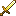 金の剣 | 剣 | 剣 |
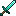 ダイヤモンドの剣 | 剣 | 剣 |
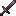 ネザライトの剣 | 剣 | 剣 |
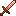 銅の剣 | 剣 | 剣 |
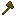 木の斧 | 斧 | 斧 |
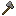 石の斧 | 斧 | 斧 |
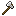 鉄の斧 | 斧 | 斧 |
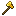 金の斧 | 斧 | 斧 |
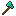 ダイヤモンドの斧 | 斧 | 斧 |
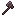 ネザライトの斧 | 斧 | 斧 |
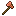 銅の斧 | 斧 | 斧 |
| 木の槍 | 槍 | 槍 |
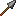 石の槍 | 槍 | 槍 |
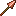 銅の槍 | 槍 | 槍 |
| 鉄の槍 | 槍 | 槍 |
| 金の槍 | 槍 | 槍 |
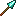 ダイヤモンドの槍 | 槍 | 槍 |
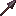 ネザライトの槍 | 槍 | 槍 |
| メイス | メイス | |
| トライデント | トライデント | トライデント |
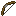 弓 | 弓 | 弓 |
| クロスボウ | クロスボウ | クロスボウ |
| 革の帽子 | 頭防具 | 魔法系の頭防具 |
| チェーンメイルのヘルメット | 頭防具 | 複合系の頭防具 |
| 銅のヘルメット | 頭防具 | 頭防具 |
| 鉄のヘルメット | 頭防具 | 頭防具 |
| 金のヘルメット | 頭防具 | 魔法系の頭防具 |
| ダイヤモンドのヘルメット | 頭防具 | 頭防具 |
| ネザライトのヘルメット | 頭防具 | 頭防具 |
| カメの甲羅 | 頭防具 | 頭防具 |
| 革の上着 | 胴防具 | 魔法系の胴防具 |
| チェーンメイルのチェストプレート | 胴防具 | 複合系の胴防具 |
| 銅のチェストプレート | 胴防具 | 胴防具 |
| 鉄のチェストプレート | 胴防具 | 胴防具 |
| 金のチェストプレート | 胴防具 | 魔法系の胴防具 |
| ダイヤモンドのチェストプレート | 胴防具 | 胴防具 |
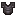 ネザライトのチェストプレート | 胴防具 | 胴防具 |
| 革のズボン | 脚防具 | 魔法系の脚防具 |
| チェーンメイルのレギンス | 脚防具 | 複合系の脚防具 |
| 銅のレギンス | 脚防具 | 脚防具 |
| 鉄のレギンス | 脚防具 | 脚防具 |
| 金のレギンス | 脚防具 | 魔法系の脚防具 |
| ダイヤモンドのレギンス | 脚防具 | 脚防具 |
| ネザライトのレギンス | 脚防具 | 脚防具 |
| 革のブーツ | 足防具 | 魔法系の足防具 |
| チェーンメイルのブーツ | 足防具 | 複合系の足防具 |
| 銅のブーツ | 足防具 | 足防具 |
| 鉄のブーツ | 足防具 | 足防具 |
| 金のブーツ | 足防具 | 魔法系の足防具 |
| ダイヤモンドのブーツ | 足防具 | 足防具 |
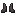 ネザライトのブーツ | 足防具 | 足防具 |
| 盾 | 盾 | 盾 |
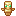 不死のトーテム | 不死のトーテム | 不死のトーテム |
| エリトラ | エリトラ | エリトラ |
| 木の杖 | 杖 | 杖 |
| 石の杖 | 杖 | 杖 |
| 銅の杖 | 杖 | 杖 |
| 鉄の杖 | 杖 | 杖 |
| 金の杖 | 杖 | 杖 |
| ダイヤモンドの杖 | 杖 | 杖 |
| ネザライトの杖 | 杖 | 杖 |